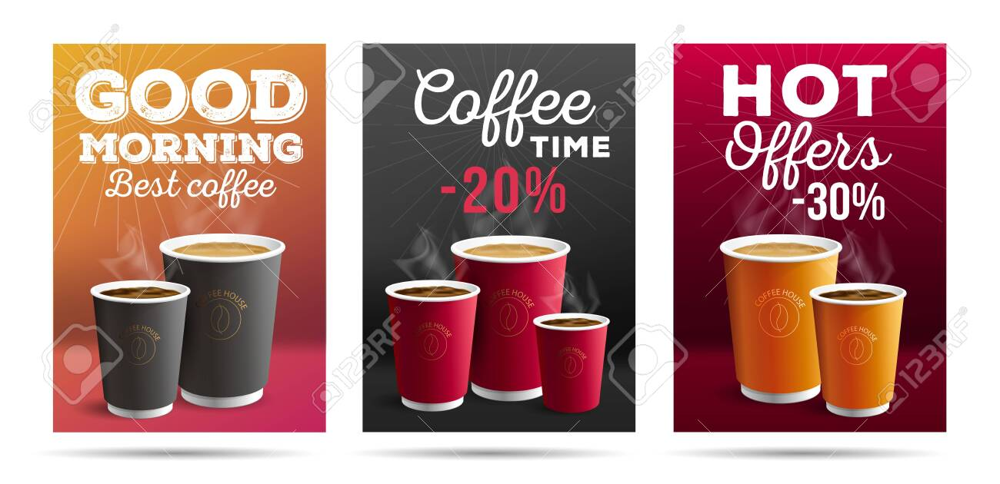

Bem Vindo à Toca do Hobbit

Um café Fantástico
Café do Elfo
Corpo cremoso, acidez cítrica de limão doce. Finalização de mel.
Café do Rei
Corpo denso, acidez baixa. Finalização doce, longa e muito agradável.
Café do Anão
Corpo aveludado, acidez levemente lática. Finalização marcante.